The Tibetian Rites: Warm-up Exercises
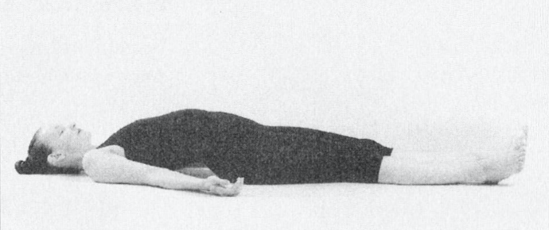
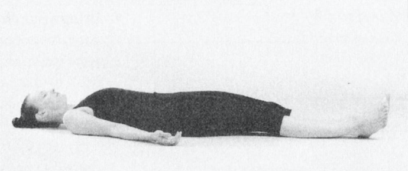
1. Body Scan
- Lie flat on your back with your arms resting on the floor, palms facing up. Breathe in and out slowly and
deeply several times.
- Keeping your shoulders and buttocks in place, breathe in and press your abdomen upward lifting the small of
your back off the floor.
- Then breathe out, releasing your abdominal muscles so that the small of your back returns to a resting
position on the floor.
- As you do the exercise, mentally scan your body. Starting at your head and slowly working your way down,
visit each part of the body, briefly focusing your attention there.
- Each time you breathe in, become aware of tension and other sensations in the area where your attention is
focused.
- Each time you breathe out, release any tension you find and relax the area completely.
 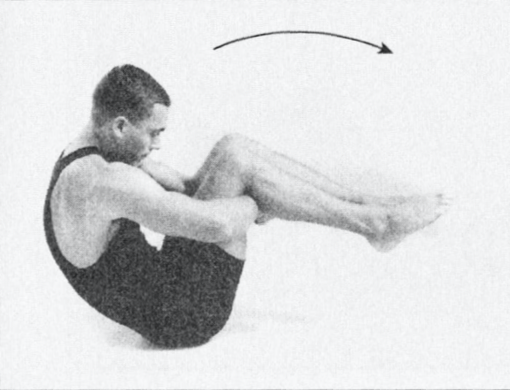
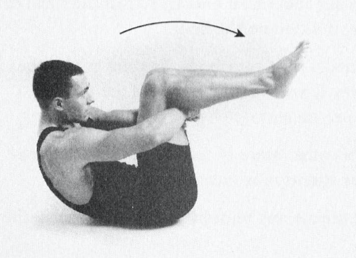
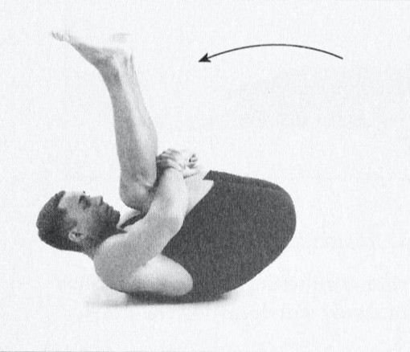
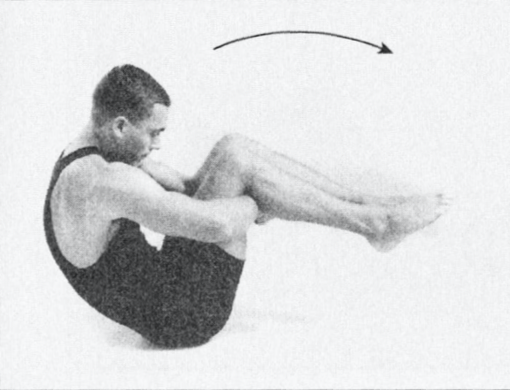
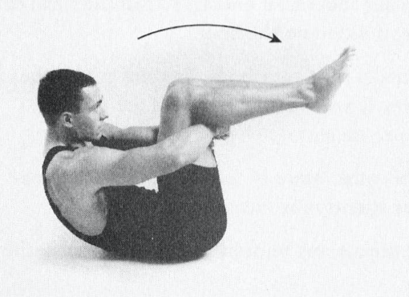
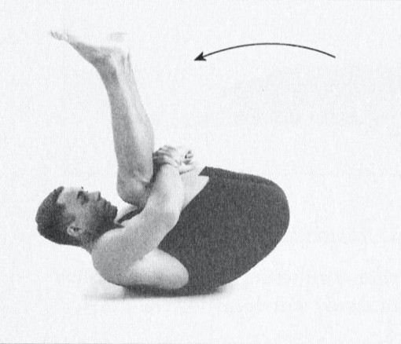
2. Spinal Rocking
Spinal Rocking releases tension from your back.
- Lying flat on your back, hug your knees to your chest by clasping your hands together under the fold ofyour
knees.
- Bring your chin to your chest, curve your spine, and rock back so that your shoulder blades come down to the
floor. Then rock forward so that your tailbone comes down to the floor.
- Breathing normally, continue to rock back and forth several times.
- In addition to, or in place ofthe above exercise, you may do the following:
- When you hug your knees to your chest, slowly rock your legs sideways back and forth several
times. Breathe normally, and try to keep your back flat on the floor.
- Continue the rocking for 15 to 20 seconds.
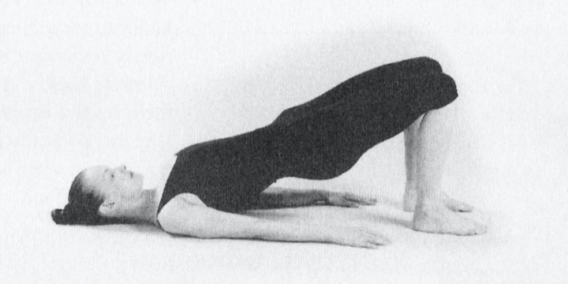
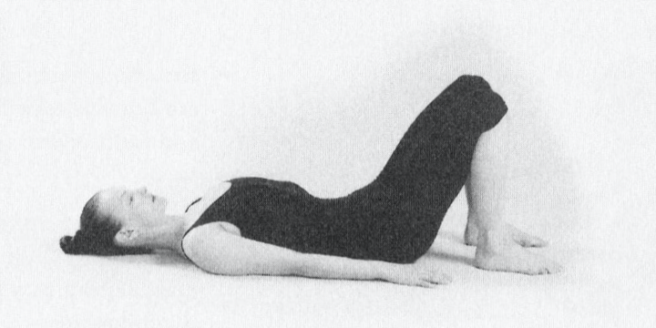
3. Bridge
The bridge warm-up builds strength for Rite Number Four and, if necessary, can be done in its place. It
releases tension from the lower back and" pelvis.
- Lie flat on your back with your arms on the floor, palms facing down. Bending your legs at the knees, plant
your feet on the floor near the buttocks.
- Breathe in as you slowly press your pelvis up a few inches offthe floor.
- Breathe out as you slowly release and lower your pelvis to the original position.
- Do this 10 times.
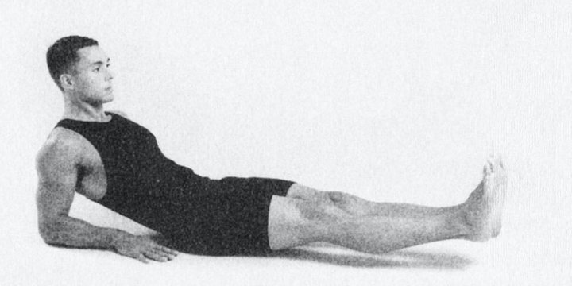
4. Abdominal Strengthener
The abdominal strengthener builds strength for Rite Number Two, and, if necessary, can be done in its
place.
- Recline on the floor with your legs extended, and elevate your head and shoulders by propping yourself up on
your elbows. your forearms should be flat on the floor, palms facing down.
- Breathe in as you lift both legs about 6 inches off the floor. Keeping your legs as straight as possible,
continue to hold them off the floor for 10 to 20 seconds, if you can. While you are holding your legs up,
breathe in and out normally. Keep your eyes open, and look at your toes.
- Breathe out as you lower your legs to a resting position on the floor. Pause.
- Do this 3 to 5 times to strengthen abdominal muscles.
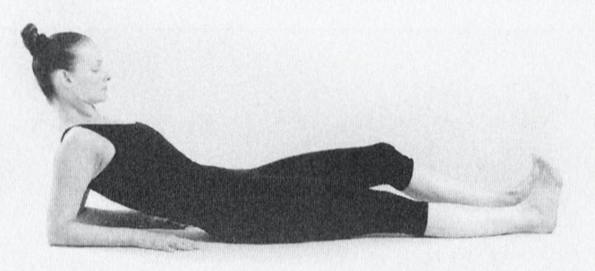
5. Leg Bangers
Leg bangers release tension in your legs and tone the thighs.
- Recline on the floor just as you did in the beginning position for the abdominal strengthener.
- Flexing your legs at the knees, rhythmically bang them up and down against the floor. Bang first one leg and
then the other in rapid succession. your heels should remain in contact with the floor
- Breathe in and out normally, keep your eyes open, and look at your legs.
- Do this for 15 to 20 seconds.
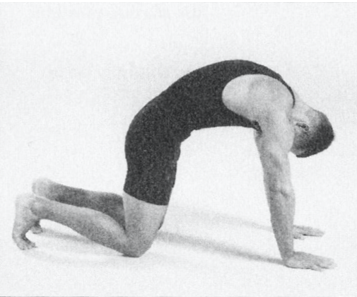
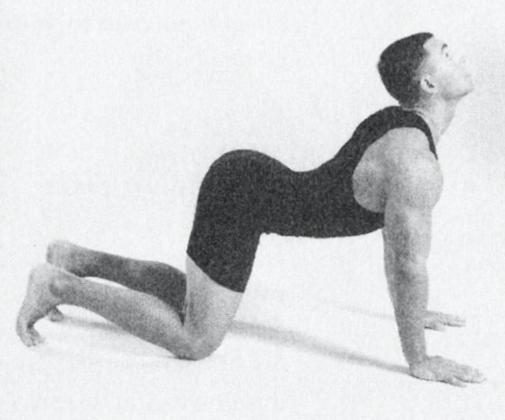
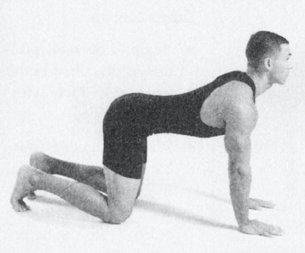
6. Table With Cat And Dog
Table with cat and dog is useful for releasing tension in your back and hips, and toning these areas.
- Get down on the floor on your hands and knees with your hands positioned under your shoulders and your knees
positioned under your hips. This is often called the table position.
- Breathe in as you allow your back to sag. At the same time, bring your chin up and rotate your pelvis so
that the tailbone moves up. This is the dog position.
- Breathe out as you arch your back upward. at the same time, tuck your chin to your chest, and rotate your
pelvis so that the tailbone moves down. This is the cat position.
- Repeat the entire sequence 3 times.
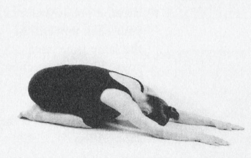
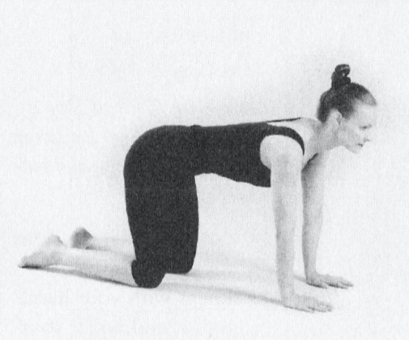
7. Puppy Stretch
- Begin in the table position as describedin the first step of table with cat and dog.
- Without moving your hands or knees, bend at the hips and sink backwards, so that your buttocks are resting
on your ankles.
- Breathe out as you bring your chin to your chest.
- Breathe in as you stretch your hands in front of you as far as they will go, all the while keeping your
palms down on the floor. Hold this position for 15 seconds, breathing slowly and deeply.
- Release and return to the starting position.
- Do this only once.
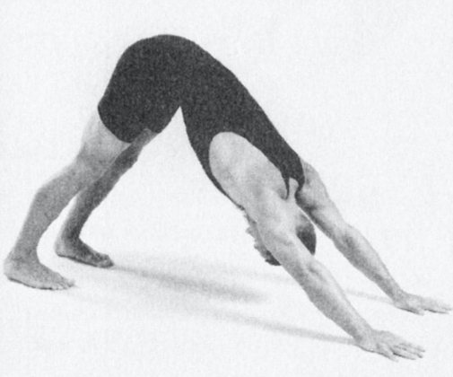
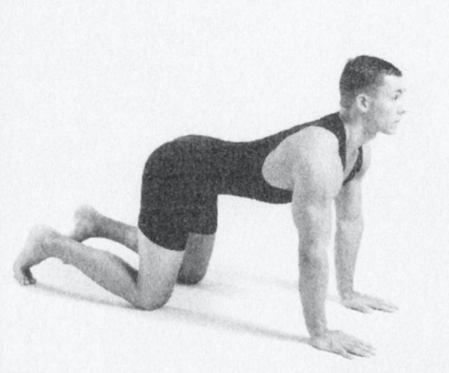
8. Downward Dog
The downward dog is a good preparation for Rite number Five, and, if necessary, can be done in its place.
- Begin in the table position.
- Curl your toes under and breathe in as you bend at your hips, raising your buttocks so that your body torms
an inverted V, just as it does in Rite Number Five. Your knees will lift up off the floor, your legs will be
straight, and your outstretched arms will be in a straight line with your back. Hold this position for 15
seconds, breathing slowly and deeply.
- Breathe out as you return to the table position.
- Do this only once.
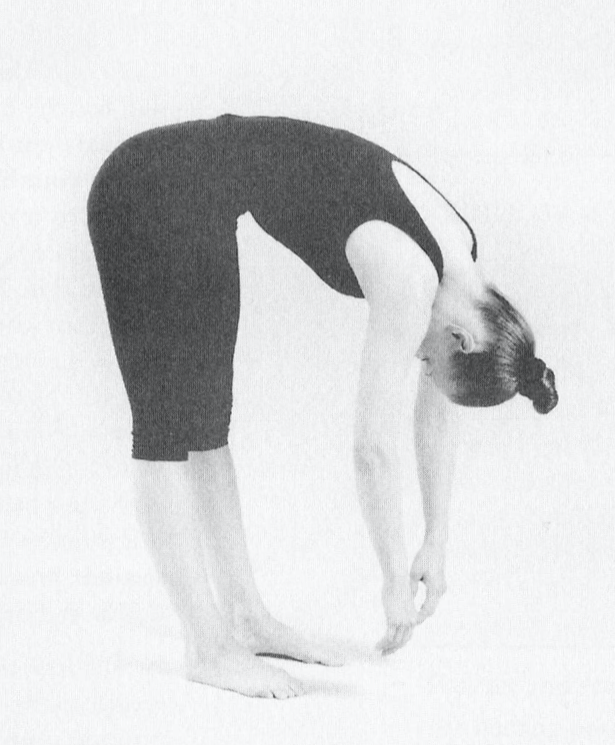
9. Rag Doll
- From a relaxed standing position, bend at the hips as if you were bending down to touch your toes.
- In this position, allow your torso, head, and arms to hang limply. You should feel loose and relaxed. Your
legs may be straight or slightly bent at the knees.
- Remain in this position for 15 to 20 seconds, and then slowly return to a standing position.
- Do this only once.
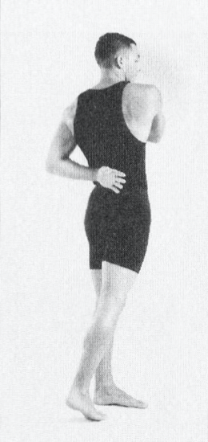
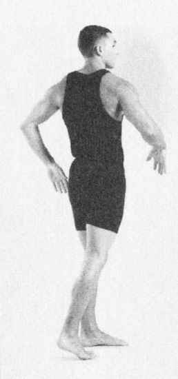
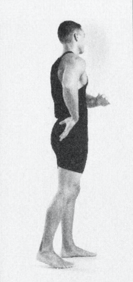
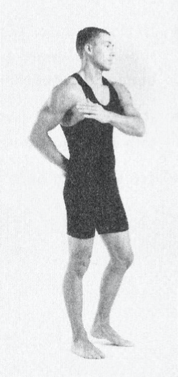
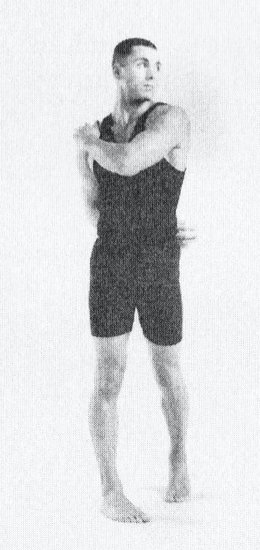
10. Helicopter
The Helicopter releases tension in your upper back, shoulders, and neck, helping to prevent neck and shoulder
strain. It is good preparationJor Rite Number One, and, if necessary, can be done in its place.
- Begin in a standing position, feet planted firmly on the floor about 12 inches apart. Keep your eyes opened.
- Extend your arms straight out from your sides, palms down, until your arms are level with your shoulders.
- Pivot the trunk of your body so that your extended arms swing back and forth rhythmically. Keep your arms
loose, relax your spine, and give in to the swinging movement.
- As you swing your arms to the right, allow your left hand to slap against your right shoulder while the back
of your right hand slaps against the small of your back.
- As you swing your arms in the opposite direction, allow your right hand to slap against your left shoulder
while the back of your left hand slaps against the small of your back.
- As you swing back and forth, allow your torso and legs to follow through with the movement. Lift your left
heel as you swing right. Lift your right heel as you swing left. But don't allow either foot to completely
leave the floor.
- As you swing to the right, turn your head left, and as you swing back to the left, turn your head right.
- Breathe in rhythm with your swinging movement.
- Repeat for 20 swings.
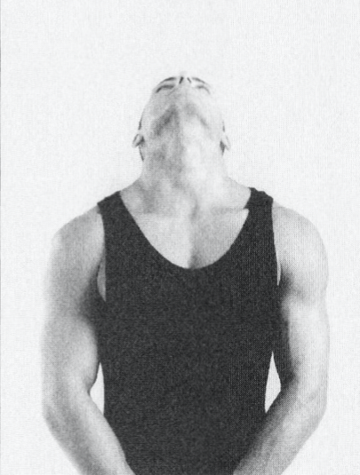
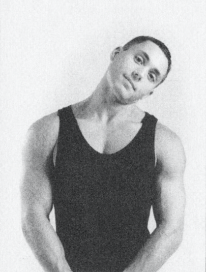
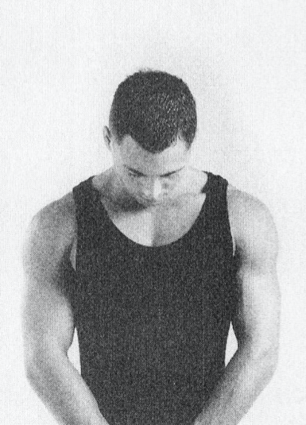
 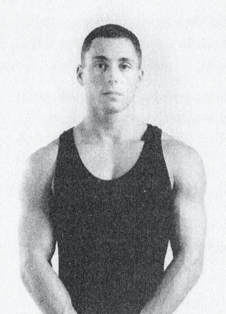
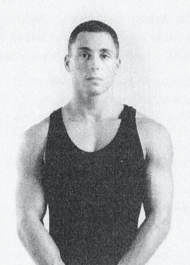
11. Head Rolls
Head rolls open and relax your throat, neck area, upper back, and shoulders. They help preuent neck strain.
- Stand upright in a relaxed position. Breathe in deeply.
- Breathe out slowly as you gently tilt your head sideways toward your right shoulder. Hold 5 seconds.
- Breathe in as you return your head to an upright position.
- Breathe out as you gently lower your head forward, chin to chest. Hold 5 seconds.
- Breathe in as you return your head to an upright position.
- Breathe out as you gently tilt your head sideways toward your left shoulder. Hold 5 seconds.
- Breathe in as you again return your head to an upright position.
- Breathe out as you gently recline your head backward. Hold 5 seconds.
- Breathe in as you return your head to an upright position.
- Do this sequence of movements only once.
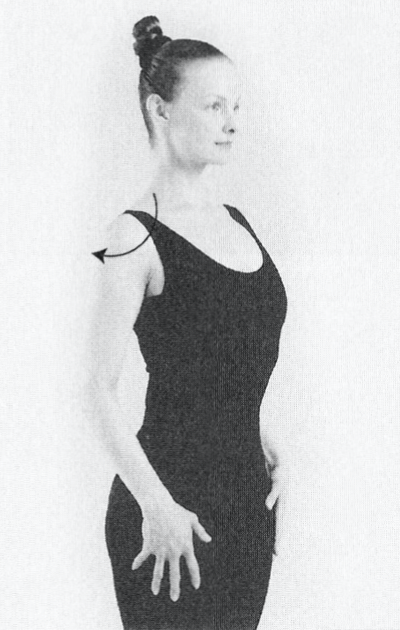
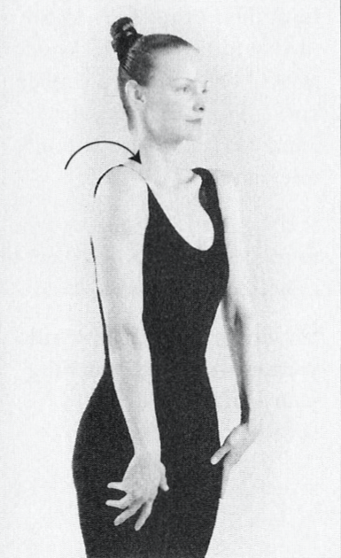
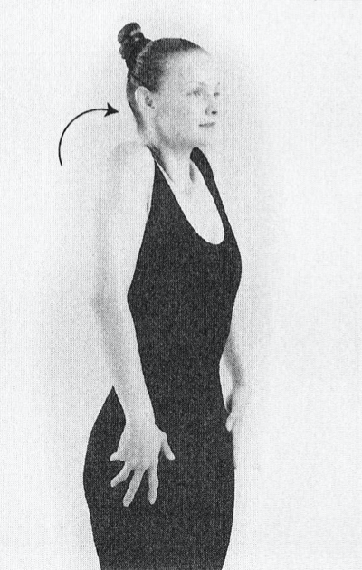
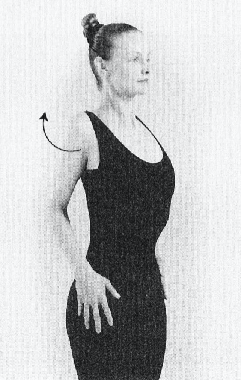
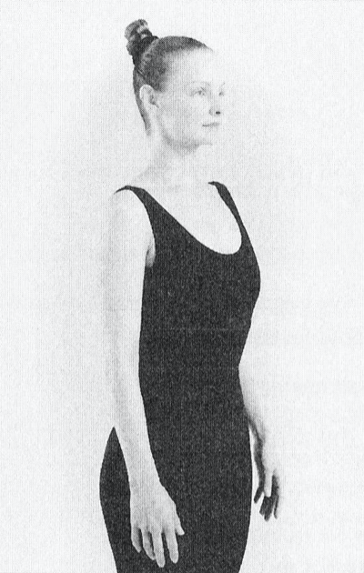
12. Shoulder Rolls
Shoulder Rolk help you to relax and let go, releasing tension in the shoulder and upper back area and preuenting shoulder strain.
- Stand upright with your body rela-xed and your arms hanging loosely at your sides. Breathe normally.
- Slowly roll or rotate your shoulders in a forward circular motion 5 times.
- Then, reverse the movement, slowly rotating your shoulders in a backward circular motion 5 times.
- Finally, take several deep breaths, sighing as you breathe out fully.
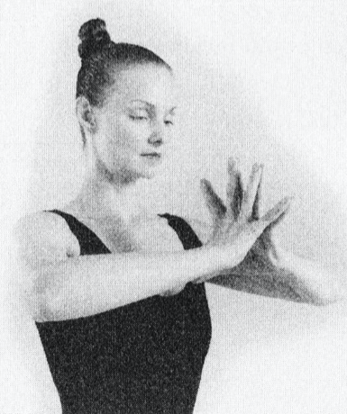
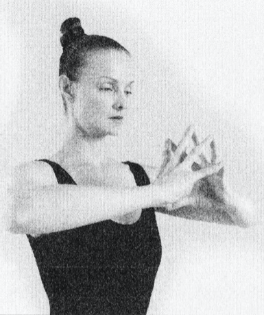
13. Spider Pushups
Spider push-ups strengthen the wrists and can help prevent wrist strain. They build wrist strength necessary
for Rites Number Four and Five.
- Stand upright with your arms held up, elbows bent, hands together in front ofyour chest, and forearms more
or less level with the floor.
- Spread your fingers apart, and, with the palms of your hands facing, touch the finger tips of one hand
against the corresponding fingertips of the other hand.
- Press inward on your fingers until their inside surfaces are mostly touching. Your knuckles will be flexed
in a convex curve. The palms of your hands will not be touching one another.
- Release, and then press your fingers together again. You are now doing push-ups.
- Slowly do 10 push-ups with your eyes opened, watching your hands. Breathe normally.
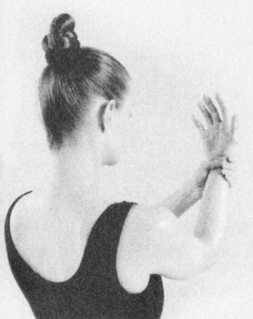
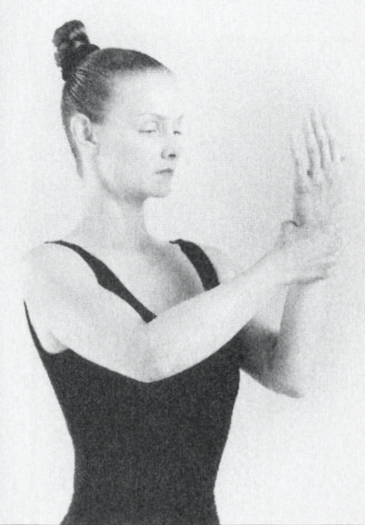
14. Wrist Squeeze
The wrist squeeze strengthens the wrists and can help prevent wrist strain and carpal tunnel syndrome. The
squeeze strengthens your wrists for Rites Number Four and Five.
- ln a relaxed, standing position, hold your left forearm upright with the palm of your left hand in front of
your face. Breathe normally.
- Clasp your right hand around your left wrist, with your right thumb resting against the inside of the wrist.
- Squeeze gently but firmly 10 times.
- Repeat the procedure with the left hand squeezing the right wrist.
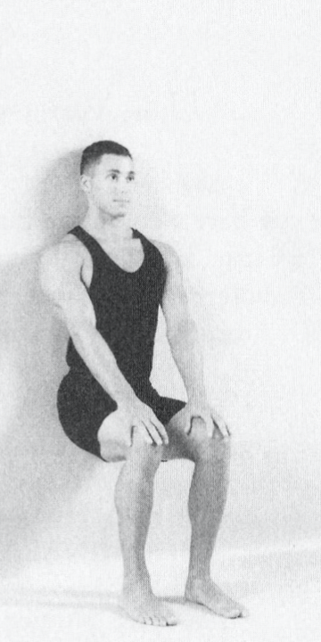
 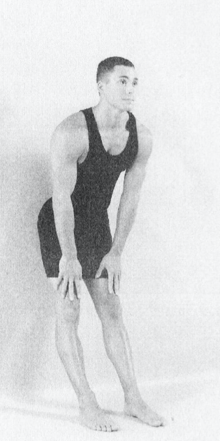
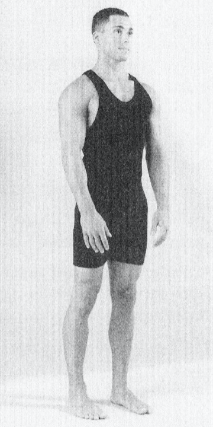
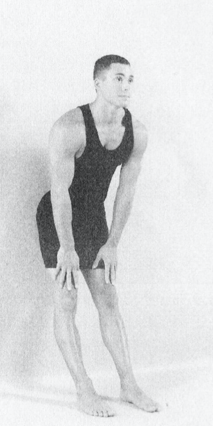
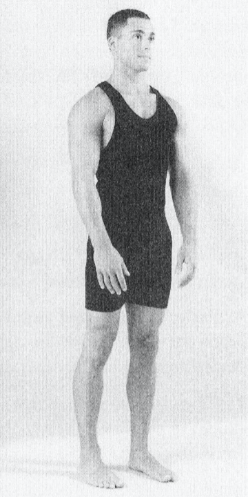
15. Thigh Strengthener
The thigh strengthener is good preparationfor Rite Number Three, and, if necessary, can be done in its place.
- Stand in front of a wall, facing away from it. Your feet should be about 6 inches apart, and your heels
should be 72 to 18 inches from the wall.
- Without moving your feet, bend slightly at the hips, and lean back until your buttocks rest against the wall.
- Breathe in. Then, breathe out as you slide downward, bending your knees as you go, and keeping your buttocks
in contact with the wall. Continue sliding, until your thighs are in a horizontal position, just as if you
were sitting upright in an invisible chair.
- Flatten your back against the wall so that your spine contacts the wall, top to bottom. Breathe in and out
deeply.
- Hold this position as long as you can up to 15 seconds. If you're in the correct posture, your thighs should
quiver.
- Breathe in as you slide back up. Take a few deep breaths before repeating.
- Do the entire sequence 2 or 3 times.
Kelder, Peter. Ancient Secret of the Fountain of Youth, Doubleday, 1985